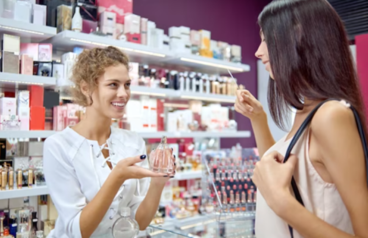

Misión
La misión de una perfumería liderada por mujeres podría ser ofrecer productos de alta calidad y personalizados que representen la individualidad y el empoderamiento de las mujeres. Nos esforzamos por crear fragancias excepcionales que reflejen la confianza y la fuerza interna de cada mujer. Creemos en la inclusión y diversidad, trabajando con productos sostenibles y éticos y colaborando con organizaciones que luchan por la igualdad de género y el empoderamiento de la mujer.
Además, nuestra misión es brindar apoyo y oportunidades de desarrollo a las mujeres emprendedoras interesadas en ingresar en la industria de las fragancias y la belleza. Queremos ser un lugar donde las mujeres puedan compartir sus historias y experiencias, y así fomentar el crecimiento y la creatividad en la industria. En última instancia, nuestra misión es liderar el camino hacia una industria de la perfumería equitativa e inclusiva, donde todas las mujeres puedan encontrar una fragancia significativa que represente su fuerza y personalidad única.

Las mujeres peruanas son importantes en el mundo por su contribución al desarrollo y crecimiento económico del país, así como por su papel en la lucha por la igualdad de género y el empoderamiento de las mujeres a nivel nacional e internacional.
En Perú, las mujeres han sido protagonistas de importantes avances en la lucha por sus derechos, habiendo encabezado luchas por la igualdad de género y la justicia social. Además, a pesar de las desigualdades existentes, muchas mujeres peruanas han logrado destacar en diversas áreas, como en la política, la cultura, la educación y la industria.
A nivel internacional, las mujeres peruanas han logrado obtener reconocimiento y respeto como defensoras de los derechos humanos y de la igualdad de género. Asimismo, han destacado en áreas como la gastronomía, el turismo y la moda, poniendo en alto el nombre de Perú en el mundo.
Es importante reconocer el papel y las contribuciones de las mujeres peruanas, fomentar su empoderamiento y apoyar su desarrollo en todas las áreas. Solo así podremos lograr una sociedad más justa e igualitaria para todos y todas.
Las mujeres emprendedoras del Per son parte clave de la economía del país, siendo una fuerza impulsora del crecimiento económico, la innovación y la igualdad de género. A pesar de las desigualdades existentes en la sociedad peruana, muchas mujeres han sido capaces de superar las barreras culturales, sociales y económicas para iniciar y hacer crecer sus propios negocios.
Las mujeres emprendedoras en el Per abarcan una amplia gama de industrias, desde la moda y el diseño hasta la tecnología y los servicios profesionales. Muchas han logrado destacar a nivel nacional e internacional por su creatividad, innovación y liderazgo empresarial.
Además, las mujeres emprendedoras en el Per también desempeñan un papel crítico en la lucha por la igualdad de género y el empoderamiento de las mujeres. Al ofrecer oportunidades de empleo y liderazgo a otras mujeres, están fomentando el crecimiento de una comunidad más inclusiva y equitativa.
Es importante destacar las contribuciones y la importancia de las mujeres emprendedoras del Per, y apoyar su desarrollo continuo a través de la capacitación, el financiamiento y el apoyo empresarial. Solo así podremos lograr una sociedad más justa e igualitaria para todos y todas.